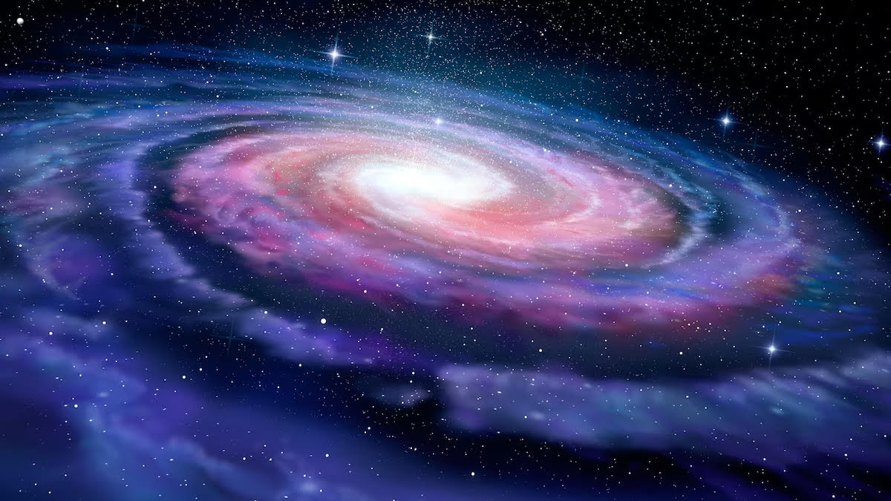
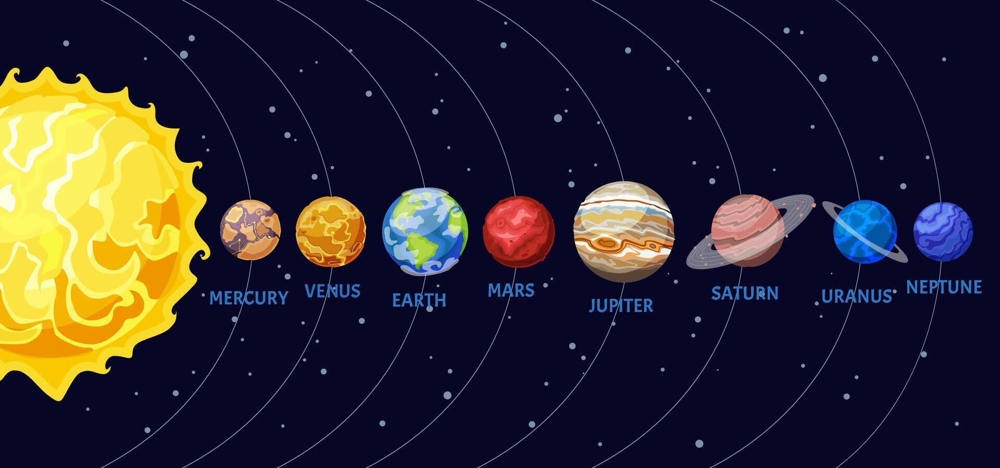

The Milky Way
The Milky Way is the galaxy that contains our Solar System. It is made up of billions of stars, gas, and dust held together by gravity.
It has a spiral shape, with long arms that curve around a bright centre. From Earth, it appears as a glowing band across the night sky.
Our Solar System is located in one of the spiral arms of the Milky Way, far from the centre. This means we are just a small part of a much larger galaxy that continues to expand and evolve over time.

Key Facts
200-400 Billion Stars
The Milky Way is estimated to contain 200 to 400 billion stars. Our Sun is just one of them - a perfectly ordinary, medium-sized star.
100,000 Light-Years Wide
The galaxy is so vast that light - the fastest thing in the universe - takes 100,000 years just to travel from one side to the other.
13.6 Billion Years Old
The Milky Way formed shortly after the Big Bang, making it almost as old as the universe itself, which is about 13.8 billion years old.
Black Hole at the Centre
A supermassive black hole exists at its centre with the mass of about 4 million Suns.
Our Solar System
Our Solar System sits inside the Milky Way galaxy, in the Orion Arm. At its centre is our star - the Sun. Eight planets orbit the Sun, along with dozens of moons, asteroids, and comets.
The planets are split into two groups. The four smaller, rocky inner planets are Mercury, Venus, Earth, and Mars. The four larger outer planets are Jupiter, Saturn, Uranus, and Neptune.

The Eight Planets
Mercury
The smallest planet and the closest to the Sun. A year on Mercury lasts only 88 Earth days, but a single day lasts 59 Earth days - it spins very slowly.
Venus
The hottest planet, reaching 465°C - even hotter than Mercury! Its thick atmosphere traps heat like a blanket. Venus also spins backwards compared to most planets.
Earth
The only planet known to support life. Earth has liquid water, a breathable atmosphere, and a magnetic field that shields us from harmful solar radiation.
Mars
Called the Red Planet because of its rusty, iron-rich soil. Mars has the tallest volcano in the Solar System - Olympus Mons - three times taller than Mount Everest.
Jupiter
The largest planet - over 1,300 Earths could fit inside it. Its famous Great Red Spot is a storm that has been raging for over 350 years.
Saturn
Famous for its spectacular ring system made of ice and rock. Saturn is the least dense planet - it would float on water!
Learn moreUranus
An icy planet that rotates on its side - its axis is tilted at 98°, so it rolls around the Sun like a bowling ball. It has 13 rings and 27 known moons.
Neptune
The windiest planet - storms reach speeds of 2,100 km/h. Neptune takes 165 Earth years to complete just one orbit around the Sun.
Watch and Learn
The Milky Way, Galaxies and Space explained simply.
Want to Go Deeper?
Head to our dedicated Saturn page for a much closer look at one of the most spectacular planets in our Solar System.
Explore Saturn